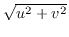

Interactive Flagging - BLFLAG
The task blflag
plots visibility data (usually baseline at a time,
with axes such as amplitude, phase, real part, imaginary part, time, etc),
and allows the user to interactively flag that data.
The user positions
the plot cursor, and uses the mouse buttons or single keyboard
characters to perform an operation.
The interactive commands are as follows:
- Left-Button:
- Pressing the left mouse button flags the nearest visibility.
- Right-Button:
- Pressing the right mouse button causes blflag
to precede to the next baseline (or to finish up, if all baselines have
been cycled through).
- Carriage-return:
- This gives a brief help message.
- a:
- Flag nearest visibility (same as left mouse button).
- c:
- Clear the flagging for this baseline, and redraw plot.
- h:
- Give help (same as carriage return).
- p:
- Define a polygonal region, and flag visibilities
within this region. You define the vertices of the
polygon by moving the cursor and then hitting the
left mouse button (or
a). You finish defining the
polygon by hitting the right mouse button (or x).
You can delete vertices with the middle mouse button (or d).
- q:
- Abort completely. This exist without apply the flagging.
- r:
- Redraw plot.
- x:
- Move to next baseline (same as right mouse button).
The inputs to blflag
are straightforward.
- vis: The name of the visibility data-set to be flagged.
- device: The PGPLOT device to use for plotting. This needs to
be an interactive device.
- line: This gives the normal linetype parameter (see
Section 5.4). blflag
averages together all the selected
channels before plotting it. The default is to use all channels.
If you flag a data point on a plot, you flag all selected channels.
- stokes: Polarization/Stokes selection - see Section 5.8.
If several are given, these are averaged together before plotting. So
normally you only select one. The default is `
ii'. If you flag
a point, you flag all polarizations (even if you did not select that
polarization).
- axis: This gives two values, being the X and Y axes of the plot.
Possible values are time, lst, uvdistance (
), hangle
(hour angle), amplitude,
phase, real and imaginary. The default is time vs amplitude.
- options:
The
options keyword give extra processing options. These include:
- nobase
- Normally blflag
plots each baseline separately,
and cycles over all baselines. The
nobase option allows all baselines
to be displayed simultaneously. This is particularly useful for point
sources or when the visibilities are purely noise-like.
- noapply
- This causes the flagging operations not to be
actually applied to the dataset.
- selgen
- This option generates a text file,
blflag.select. This
file contains visibility data selection commands to select the flagged data.
The inputs are normally very simple:
| BLFLAG |
| vis=vela.line |
Specify visibility dataset. |
| device=/xs |
Specify an interactive PGPLOT device. |
| stokes |
Defaults to `ii'. |
| line |
Defaults to all channels. |
| axis |
Defaults to time vs amplitude. |
| select |
Defaults to selecting all data. |
For a point source (e.g. calibrator), a particularly useful way of
flagging, at least after initial calibration, is to plot the
``scatter diagram'' - real vs imaginary parts of the visibility,
with all baselines simultaneously. This should show points scattered around
the true flux of the source. An arc in such a plot indicates poor phase
stability. Typical inputs in this mode are
| BLFLAG |
| vis=cal.uv |
Specify visibility dataset. |
| device=/xs |
Specify an interactive PGPLOT device. |
| stokes |
Defaults to `ii'. |
| line |
Defaults to all channels. |
| axis=real,imag |
Plot real vs imaginary. |
| opptions=nobase |
Plot all baselines simultaneously. |
Miriad manager
2016-06-21